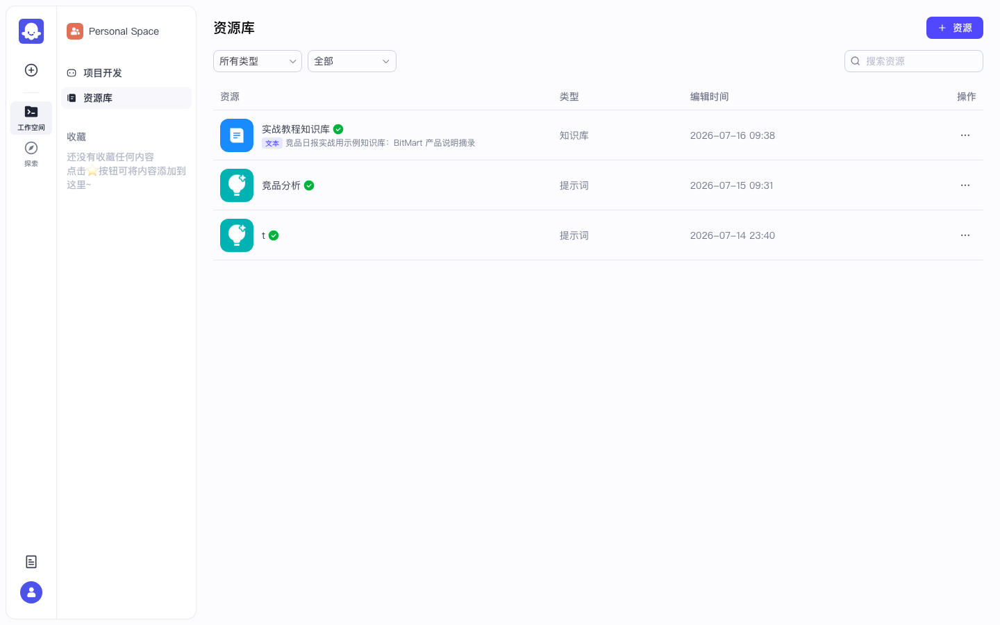
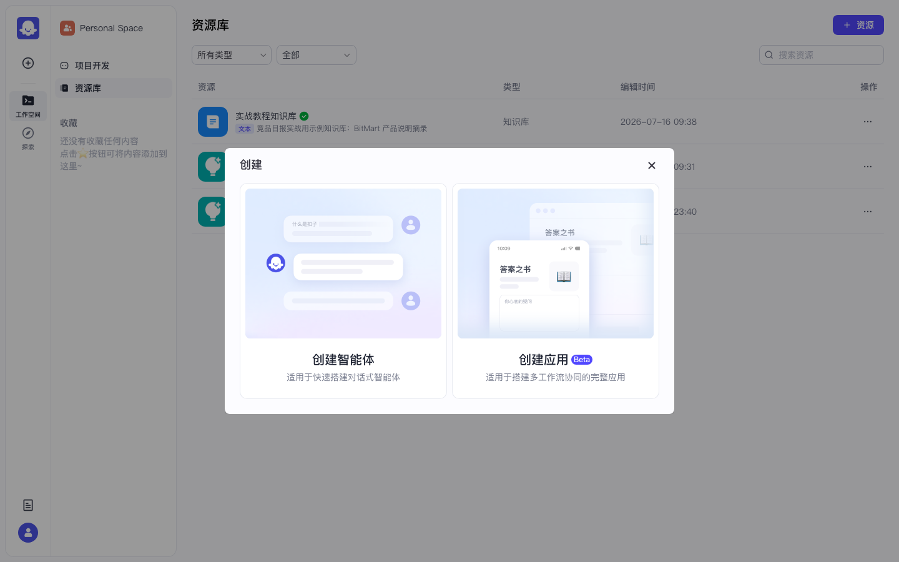

Coze 实战 · 第8课 / 共 10 课 · ≈35 min · 开源部分可用
P06 · 数据库记忆读写（结构化存储）
上级：实战总目录 · 本地：http://localhost:8888。
知识库适合「搜文档」；数据库适合「记一行行结构化数据」（日期、交易所、活动名），供工作流 CRUD、Agent 查询。
★
为什么第 8 课才学数据库？
0
前置检查
1
进入「资源库」页面
作用：知识库、数据库、插件等资源都集中在这里创建和管理。
- 打开
http://localhost:8888 - 看页面最左侧竖条导航（侧栏）
- 找到并单击 资源库（图标可能是文件夹或数据库样式）
- 地址栏大致变为 /space/.../library 或带 library 字样
- 页面主体应列出已有资源：知识库、插件、数据库等卡片或表格行

图 1：资源库总览 — 可看到知识库、数据库等资源类型。

图 2：资源库入口对照 — 侧栏点「资源库」后的列表页。
✅ 验收：你能看到资源列表；右上角或列表上方有「+ 创建」或「创建资源」按钮。
2
创建数据库（逐步点击）
- 在资源库页面，找到右上角 + 创建 按钮 → 左键单击
- 弹出菜单或抽屉，列出：知识库、数据库、插件等选项
- 点 数据库（不要点知识库）
- 进入创建向导，在「名称」输入框里填：
competitor_campaigns - 描述（可选）填：
竞品活动结构化记录，教程用 - 点 确认 或 创建

图 3：创建菜单 — 选中「数据库」。

图 4：创建资源类型选择 — 知识库 / 数据库 / 插件等。
名称报红用纯英文+下划线；不要用空格和中文。正确示例：
competitor_campaigns。✅ 创建成功后自动进入表结构设计页，或资源库列表出现新数据库卡片。
3
定义字段（照表添加 4 列）
作用：每一「列」对应表里的一类信息；工作流插入时要给每列赋值。
在表结构编辑页，逐行添加字段（点「+ 添加字段」或「新增列」）：
| 字段名（英文） | 类型 | 说明 · 示例值 |
|---|---|---|
exchange | Text / 文本 | 交易所名，如 Binance |
campaign | Text / 文本 | 活动名称，如 Launchpool 试写 |
report_date | Text 或 Date | 日期 2026-07-16（建议统一 YYYY-MM-DD） |
note | Text / 文本 | 备注，如 教程插入测试 |
- 每添加一列：字段名填上表英文名 → 类型选 Text → 保存该行
- 四列都加完后，点页面底部或右上角 保存
- 回到资源库，确认
competitor_campaigns在列表中且状态正常
开源版对复杂 SQL、高级索引有裁剪；本教程只用「表单字段 + 工作流 Database 节点」，足够入门。
4
工作流里「插入」一行（写操作）
作用：验证数据库真能存数据；后面 Agent / 查询都依赖有数据。
4.1 打开或新建工作流
- 进入 P01 的应用「竞品日报实战」IDE，或资源库 → 新建最小工作流
- 画布保留：
开始 → … → 结束 - 在「开始」和「结束」之间点 + 添加节点
- 搜索并选择 Database（或「数据库」）节点
4.2 配置插入
- Database 节点 → 选择表：
competitor_campaigns - 操作类型选 插入（Insert）
- 字段映射（可直接填字面量）：
exchange=Binancecampaign=Launchpool 试写report_date=2026-07-16note=教程插入测试
- 连线：开始 → Database(插入) → 结束
- 点右上角 保存
- 点 试运行 → 开始节点可留空 → 点「运行」
✅ 试运行全绿；可到资源库打开该数据库「数据」 tab，看到刚插入的一行。
5
工作流里「查询」刚写入的行（读操作）
- 在同一工作流（或复制一份）再添加一个 Database 节点
- 操作类型选 查询（Select / Query）
- 表仍选
competitor_campaigns - 添加过滤条件：
report_date等于2026-07-16（或引用开始节点变量） - 连线：开始 → 插入节点 → 查询节点 → 结束
- 结束节点输出里引用查询节点的结果字段
- 再次 试运行
✅ 结束节点 / 试运行结果里能看到至少 1 条记录，含 Binance / Launchpool 试写。
查询结果为空
① 插入节点是否真的成功？先看资源库表内有没有数据。
② 过滤字段名是否拼错（
③ 日期格式是否与写入一致。
② 过滤字段名是否拼错（
report_date 不是 report_data）。③ 日期格式是否与写入一致。
6
（可选）挂到智能体「记忆 / 数据库」
作用：让用户在对话里问「7 月 16 日有哪些活动」，Bot 查表回答。
- 打开 P02/P03 的智能体 IDE
- 中间栏找 记忆 或 数据库 区块（与知识库并列，文案因版本略有不同）
- 点 + 添加 → 选
competitor_campaigns - 左侧人设文末追加：
当用户询问「某日有哪些竞品活动 / 数据库里记录了什么」时，优先查询已挂载的数据库表 competitor_campaigns， 用 Markdown 表格列出 exchange / campaign / report_date / note；查不到记录就明确说「表中没有该日期的数据」，不要编造。
预览测试句：
请查询数据库 competitor_campaigns 中 report_date 为 2026-07-16 的所有活动，用表格展示。
7
验收清单
- □ 资源库中存在数据库
competitor_campaigns - □ 表含 4 个字段：exchange / campaign / report_date / note
- □ 工作流 Database 节点「插入」试运行成功，表内可见数据
- □ 工作流 Database 节点「查询」能查回至少 1 行
- □（可选）Agent 对话能引用表数据
全部打勾 → 下一课 P08 发布 · PAT · OpenAPI（第 9 课）。
源码对照：backend/domain/memory/database/